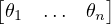

1 Intro - lightboard
Everything follows right hand rule

Figuur 1:
2 Foundation of mobile robotics ch-2
2.1 Degrees of freedom rigid body
- Configuration - A specific position of the position of all points of robot
- C-space - The space of all configuration
- degrees of freedom - dimension of c space
- Rigid body has 6 degrees of freedom
- dof - ∑
(freedompoints) - no.of.constrains
|
|
|
|
| points | dof | no.of.constrains | constrans |
|
|
|
|
| point A | 2 | 0 | - |
| point B | 2 | 1 | dab |
| Point C | 2 | 2 | dac,dbc |
|
|
|
|
- dof = m(N - 1) -∑
i=1Jci
- also ci + fi = m
2.1.1 Grublers formula
- N = no of links
- J = no of joints
- m = dof of rigid body (3 for planar 6 for spatial)
- fi = No of freedom of joint
- ci = No of constrains by joint
-
| Dof | = m(N - 1) -∑
i=1jc
i | | | |
|
| = m(N - 1)∑
i=1jm - f
i | ∵ m = fi + ci | | | |
|
| = m(N - 1) - J.m∑
i=1jf
i | ∵∑
i=0jc = J.c | | | |
|
| = m(N - 1 - J) + ∑
i=1jf
i | | | | |
- Grubler formula is valid only for joints with independant constrain
- Closed chain mechanism - both base and end point is connected to
ground
 Figuur 2:
Figuur 2:
- Open chain mechanism only base is attached to ground
 Figuur 3:
Figuur 3:
2.2 Configuration space topology
- sphere and plance has same dimension (x,y and latitude,longitude) but
diffrent hape
- shape of the c-space is topology
- Topologically equivalent - if two spaces can be deformed into each other
without any removal or addition
- E 1 - euclidean line
- c space can be expressed as cartesian product of two are more space of
lower dimension
- c- space of some common robots (Xn where n is the dimension)
- Rigid body in plane = ℝ2 ×S1
- PR robot arm = ℝ1 ×S1
- planar rigid body with PR arm =
| for arm | = S1 ×S1 = T2 | …T = torus | | | |
|
| for mobile base | = ℝ2 ×S1 | | | |
|
| ∴ c - space | = ℝ2 ×S1 ×T2 | | | |
|
| = ℝ2 × T3 | | | | |
2.3 Configure space Representation
To perform computations we need numerical represenstation
2.3.1 Explicit represenstation
- choice of n co-ordinates for to represent an n-dimensional space
- for sphere,longitude and latitude
- causes singularaties (at northpole,sudden shift in values)
- to avoid this use co-ordinate chart(split parts like atlas)
2.3.2 Implicit represenstation
- represensting n n-dimensional space as if it is embedded in euclidean space
- disadvantage as has more variable to consider
- easy to define closed loops
2.4 Configuration and velocity constrain
For a 4 bar linkage,the closed loop can be expressed by the following equations
| L1 cosθ1 + L2 cos(θ1 + θ2) + … + L4 cos(θ1 + … + θ4) | = 0 | | | |
|
| L1 sinθ1 + L2 sin(θ1 + θ2) + … + L4 sin(θ1 + … + θ4) | = 0 | ∵ sum of all vectors in loop is zero | | | |
|
| θ1 + θ2 + θ3 + θ4 + 2π | = 0 | ∵ sum of all angles is 2π | | | | |
These equations are called loop closure equations.For general robots c-space
can be implicitly represented by column vector θ = T ∈ℝn
By diffrentiating the above equation

Figuur 4:
this can be expressed as matrix multiplying a column vector

Figuur 5: